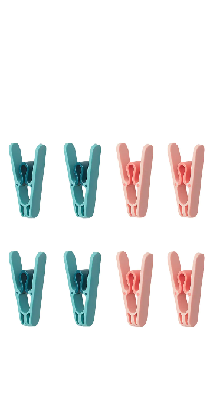
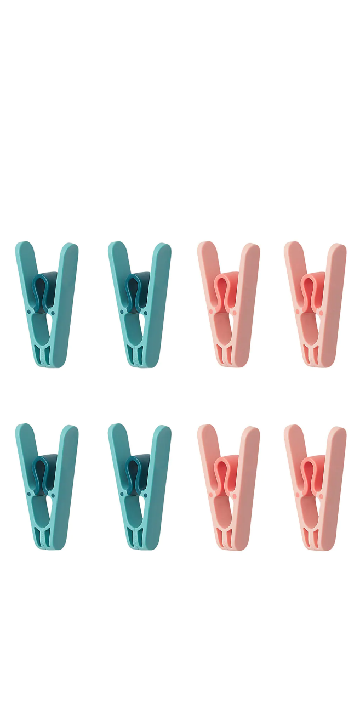

The Cube
 

这把椅子由四个竹碗并接而成，座面由软木砧板、夹子和浴球相连接而成，这样的结构使得座面可以适当压缩。希望能够通过这把椅子来展现黑客精神对一件事物不懈追求、探讨的精神，这种探究是多角度的、全面的。
The chair is composed of four bamboo bowls connected in parallel, and the seat surface is connected by a cork cutting board, a clip and a bath ball. This structure makes the seat surface can be properly compressed. I hope this chair can show the hacker spirit's unremitting pursuit and discussion of a thing. This exploration is multi angle and comprehensive.